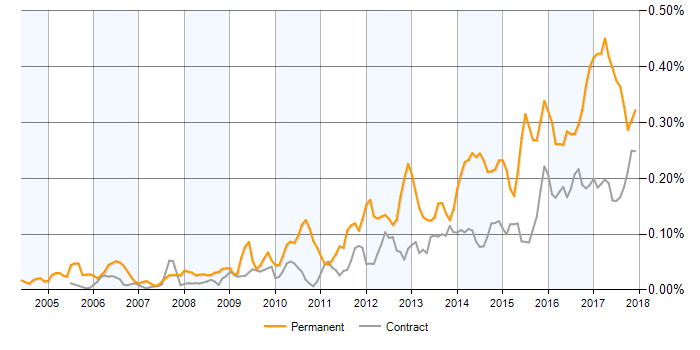

My background - a generalist tester with a more recent focus on automation. Previous companies: Orange, Play.com, National Trust, Dyson
We have a mixed ability group at Paxport in terms of technical abilities. The primary aim of this session is to help demystify automated testing and to generate discussion and enthusiasm. By the end of today, I hope you will have a broader understanding of how automated testing can help support what we already do. I also hope we can find some ways of working and supporting each other more closely
We have a mixed ability group at Paxport in terms of technical abilities.
Nobody will be asked to move quickly out of their comfort zone, but their is a desire to increase Test Team experience of automation
I am not an expert, I am certainly not the oracle; but it iss healthy to be challenged and I need others to add their ideas. There will be always be better, more efficient ways of doing things. Test Automation is often about writing test code. In this respect, we should have the same aspirations as the Developers in respect of technical governance e.g.
www.itjobswatch.co.uk Job postings that featured Test Automation Engineer in the job title as a percentage of all IT jobs advertised.
You may already know of some tools such as:
Fabrix is our Front End product which we sell branded, colourwashed and styled for many companies
browser automation is not easy for a number of reasons:
We have a large number of websites to try and automate - more than 50 at a guess. This is not easy when they all look different - if elements for one website are not present in the DOM of another.
Our test framework tries to handle this - I will demonstrate, but first, a look at how we might simply automate form filling a page in a procedural fashion, using Selenium
lets take a look at a Fabrix site: Budget Air UK (UAT)
...and examine how we can do some simple Selenium stuff such as form filling...
most of our FAB testing involves doing one of three things (often all 3): Searching, Costing and Booking
how might we currently test FAB? Here's an example bug
here's how we might do the entire Search, Cost & Book journey using an automated test within Jenkins
and here's the report that is produced EasyJet Test Scenario 1
here is an entire suite of Ryan Air tests that can be run, either on a schedule, or on demand